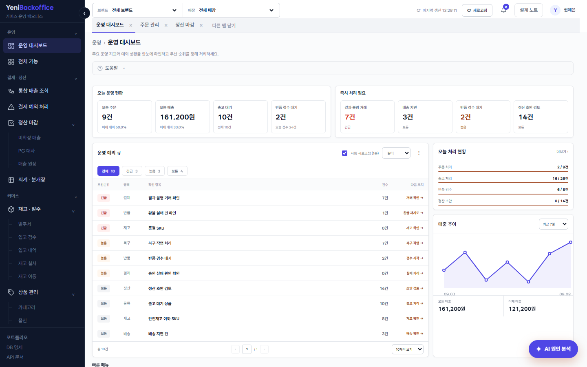
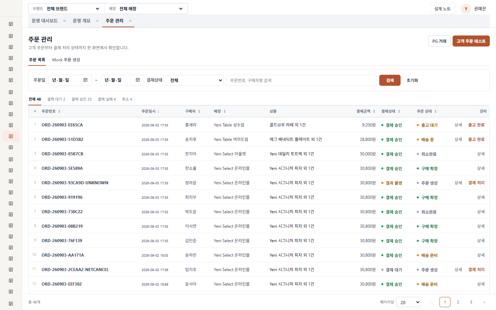
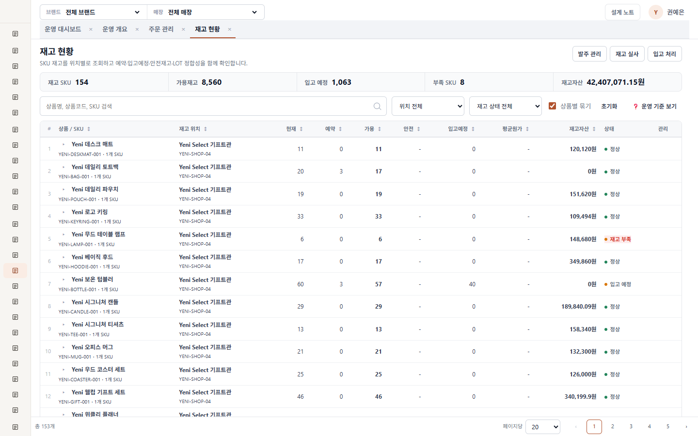
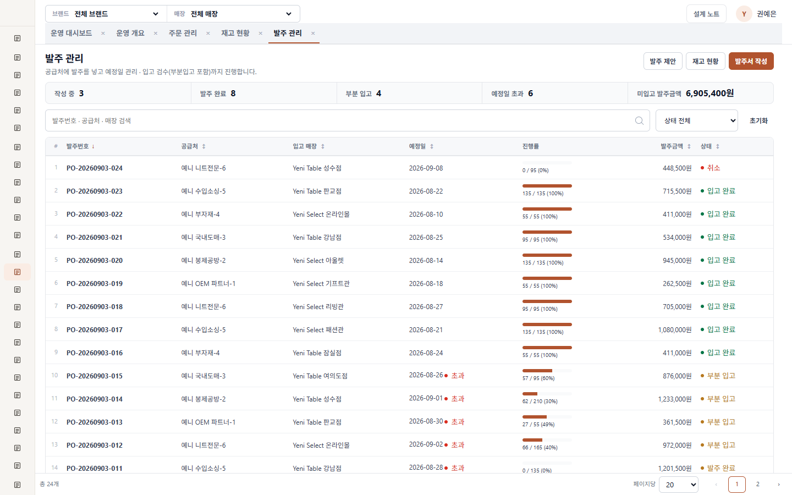
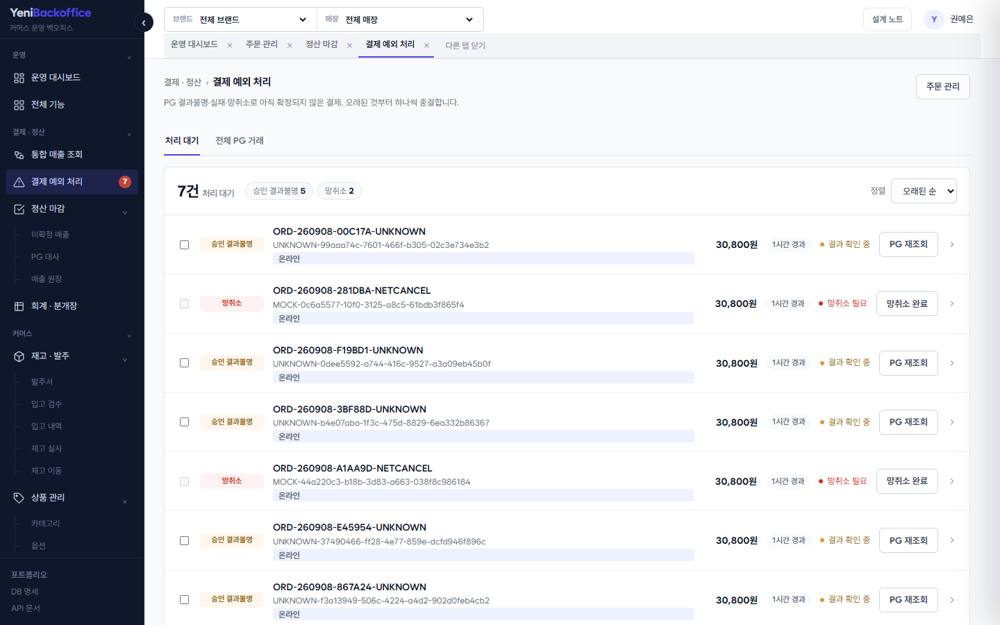
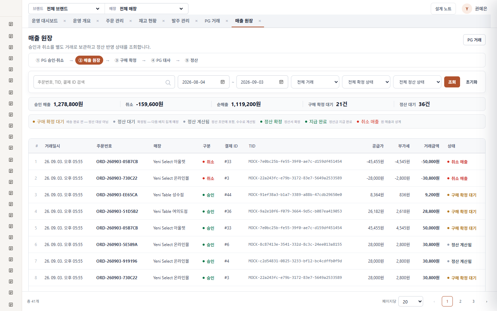
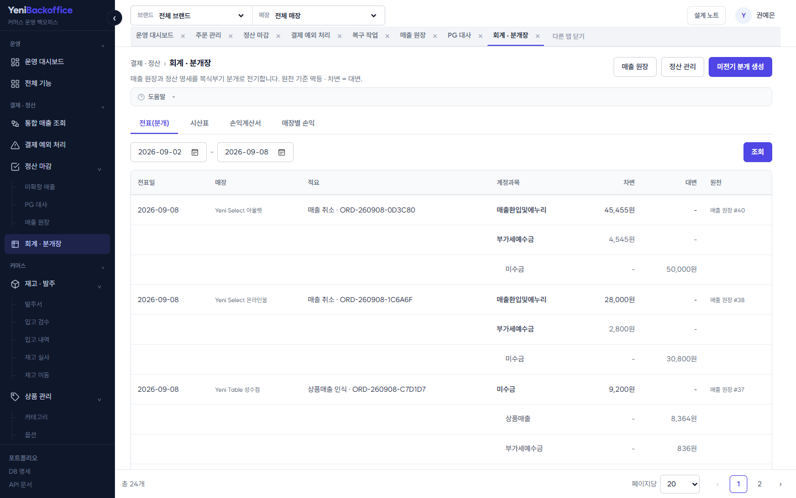
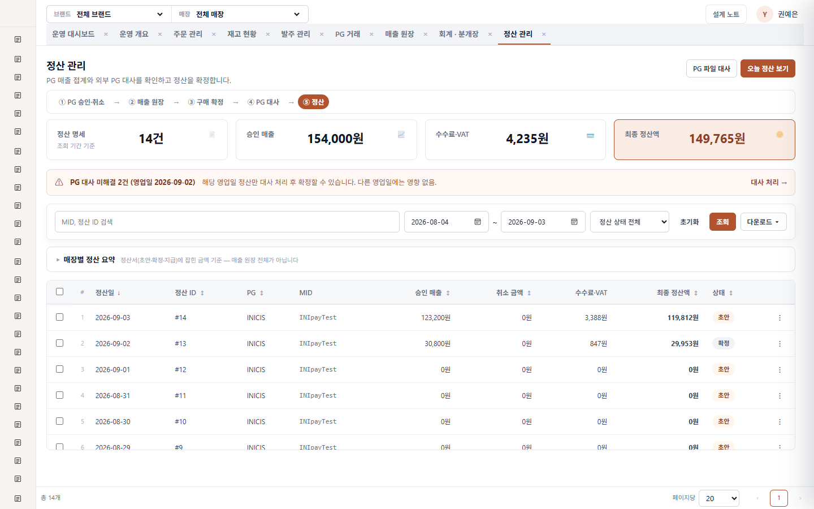
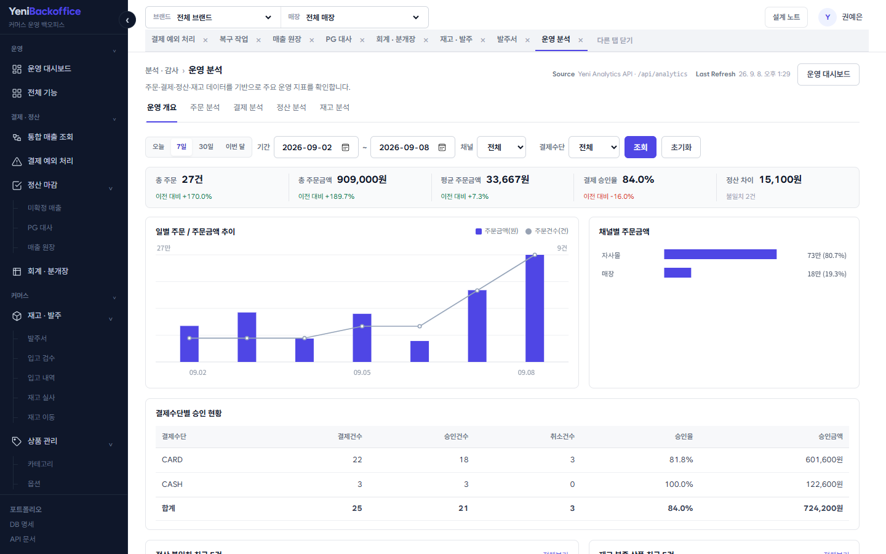

분리된 상태
주문·결제·매출·정산 상태를 독립적으로 관리해 부분 실패와 복구를 표현합니다.
COMMERCE OPERATIONS PORTFOLIO
결과 숫자를 나열하는 관리자 화면이 아니라, 예외를 발견하고 실제 조치까지 이어지는 운영 시스템을 목표로 했습니다.
주문·결제·매출·정산 상태를 독립적으로 관리해 부분 실패와 복구를 표현합니다.
매장별 원장과 LOT, 예약, 이동 중 재고를 통해 장부와 실물을 연결합니다.
위험 재고, 결과불명 결제, 정산 초안처럼 지금 처리할 업무를 우선 노출합니다.
core가 업무 규칙을 소유하고 api는 화면과 전송 계층만 담당합니다. 외부 연동 실패는 복구 작업으로 분리합니다.
승인과 취소를 수정하지 않고 별도 행으로 누적하며, 구매 확정된 매출만 정산 대상으로 전환합니다. 재고 역시 현재 수량을 직접 덮어쓰기보다 모든 증감을 원장으로 기록합니다.









✓ 상품 옵션 편집 → 입고 화면 이동
✓ 공급처 → 발주 → 입고 → LOT 반영
✓ 주문 → 결제 → SALE → 출고 완료
✓ 배송 → 구매 확정 → 정산 대상 전환
✓ 반품 → 검수 → 환불 결과 연결
✓ 재고 실사와 매장 이동 정합성
✓ 브랜드·매장 범위 및 잘못된 조합 차단
고정 탭과 외부 스크롤 충돌, 옵션 화면 하단 잘림, 반복 클릭, 비동기 초기화 시점처럼 실제 화면 테스트에서 발견한 문제를 보완했습니다.
인증·권한, 실제 PG 서명 검증, 대량 데이터 성능, Testcontainers 기반 PostgreSQL 통합 테스트는 의도적으로 범위 밖에 두었습니다.
NEXT ITERATION